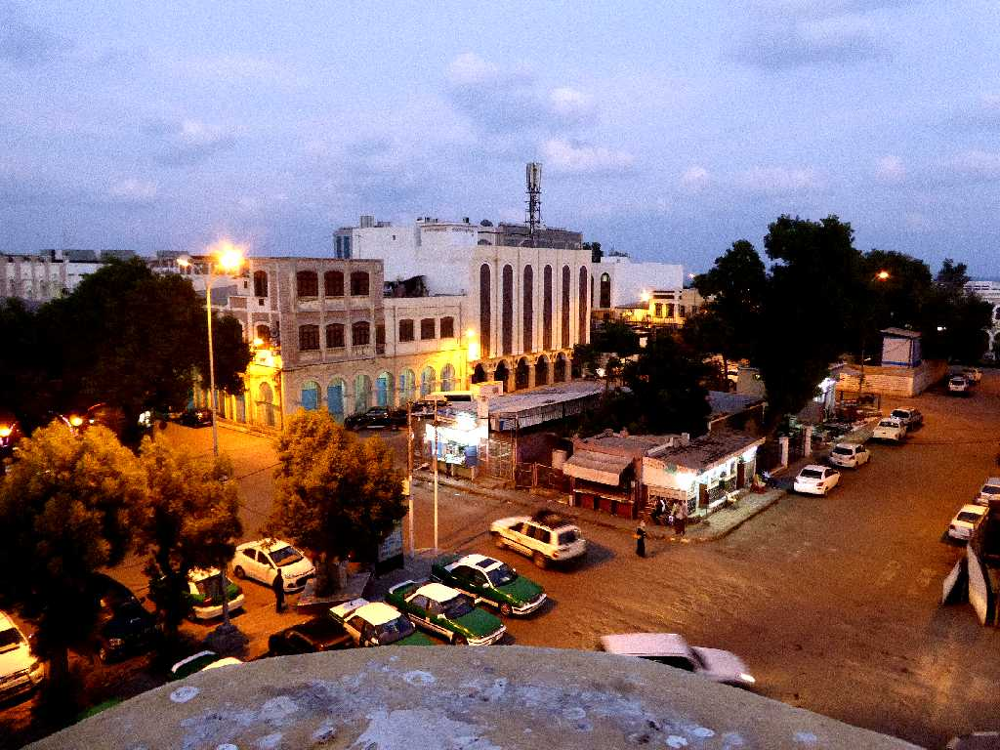
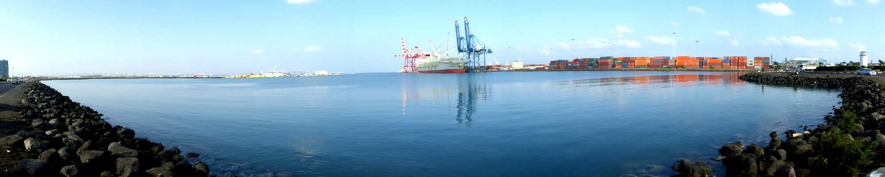
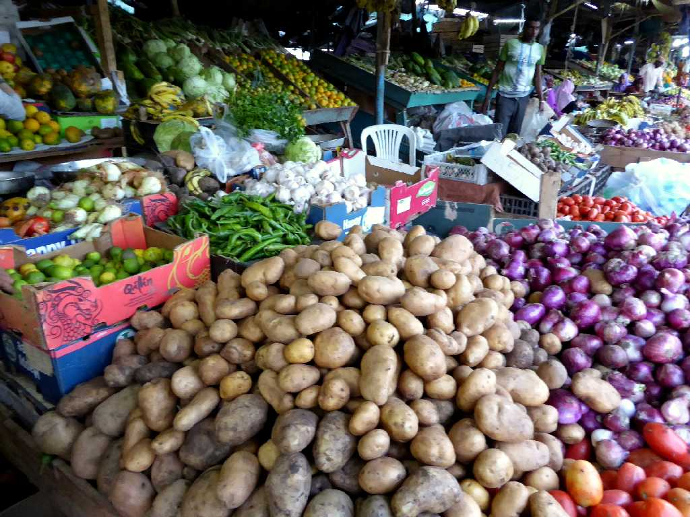

Djibouti City
ジブチ市中心街

Port Djibouti
１９７７年にエチオピアから独立したジブチは砂漠に覆われた自然条件のもと農業も鉱工業も発展せず海岸線をもたない隣国エチオピアの港湾サービスに依存している

Marché Riyad Djibouti
ジブチ市の台所リャドマーケット
January 16 2017 Marché Riyad Djibouti
ここジブチからエチオピア北部のメケレまでアフリカ大地溝帯最深部のアファールトライアングルを四輪駆動車で約１,８００ｋｍ走る旅が始まる